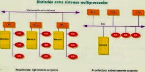

Un multiprocesador puede verse como un computador paralelo compuesto por varios procesadores interconectados que comparten
un mismo sistema de memoria.
Los sistemas multiprocesadores son arquitecturas MIMD con memoria compartida. Tienen un único espacio de direcciones para
todos los procesadores y los mecanismos de comunicación se basan en el paso de mensajes desde el punto de vista del programador.
Dado que los multiprocesadores comparten diferentes módulos de memoria, pudiendo acceder a un mismo módulo varios procesadores,
a los multiprocesadores también se les llama sistemas de memoria compartida.
Dependiendo de la forma en que los procesadores comparten la memoria, se clasifican en sistemas multiprocesador UMA, NUMA y COMA.
Multiproceso es tradicionalmente conocido como el uso de múltiples procesos concurrentes en un sistema en lugar de un único
proceso en un instante determinado. Como la multitarea que permite a múltiples procesos compartir una única CPU, múltiples
CPUs pueden ser utilizados para ejecutar múltiples hilos dentro de un único proceso.
El multiproceso para tareas generales es, a menudo, bastante difícil de conseguir debido a que puede haber varios programas
manejando datos internos (conocido como estado o contexto) a la vez.

Los programas típicamente se escriben asumiendo que sus datos son incorruptibles. Sin embargo, si otra copia del programa
se ejecuta en otro procesador, las dos copias pueden interferir entre sí intentando ambas leer o escribir su estado al mismo tiempo.
Para evitar este problema se usa una variedad de técnicas de programación incluyendo semáforos y otras comprobaciones y
bloqueos que permiten a una sola copia del programa cambiar de forma exclusiva ciertos valores.